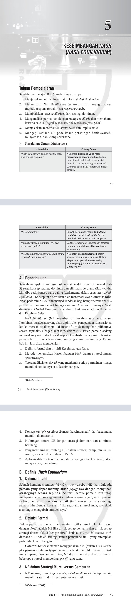

Satu dashboard untuk mengubah ide menjadi pekerjaan nyata.
Kelola produk digital, catat pesanan dan transaksi, serta gunakan enam agen AI untuk mendukung riset, analitik, intelijen bisnis, pemasaran, pendapatan, dan persetujuan manusia.
Tahap 2 · Katalog Digital Solutions
Katalog awal buku, modul, game edukasi, aplikasi, peta, video AI, serta layanan profesional. Status pengembangan dicantumkan agar produk prototipe tidak disalahartikan sebagai produk final.
📘
Buku terbit
Teori Permainan (Game Theory)
Analisis Strategis untuk Ekonomi, Bisnis, dan Ekonomi Syariah. Diterbitkan Rajawali Pers, cetakan pertama September 2026.
ISBN: 978-623-08-2671-9
Harga: Rp150.000
Cuplikan Bab 5 — Keseimbangan Nash

Cuplikan halaman asli Bab 5, membahas Keseimbangan Nash (Nash Equilibrium).
Nash Equilibrium (NE) adalah kombinasi strategi ketika tidak ada pemain yang dapat meningkatkan payoff dengan mengubah strateginya secara sepihak, sementara strategi pemain lain tetap. Bab ini juga membahas respons terbaik, teorema eksistensi Nash, multiple equilibria, strategi campuran, dan penerapan dalam ekonomi syariah.
Mengurai Realitas Pemidanaan Indonesia. Diterbitkan Deepublish, cetakan pertama Juni 2026. Mengulas penjara, kriminalitas, kebijakan pemidanaan, dan efektivitas efek jera.
ISBN: 978-634-01-3233-5
Harga: Rp175.000
Cuplikan Bab 1 — Mengapa Penjara Kita Penuh?
Cuplikan halaman pembuka Bab 1, halaman tercetak 1–3.
Ekonometrika Lanjutan Menggunakan Software Stata Ver 17.0
Buku panduan ekonometrika terapan yang mencakup DID, RDD, RCT, survival analysis, discrete choice experiment, serta implementasi dan interpretasi dengan Stata.
Novel yang sedang ditulis, mengangkat tema kejahatan, hukum, korban, dan sisi kemanusiaan. Informasi ini dicantumkan sebagai proyek penulisan, bukan buku terbit.
Status: sedang ditulis
🎮
GAME EDUKASI INTERAKTIF
Battle of Choices — Siapa Pilih Apa?
Game pembelajaran interaktif untuk pengambilan keputusan, analisis perilaku, strategi pilihan, dan interpretasi Multinomial Logit.
Simulasi edukatif untuk mengenalkan konsep dan keputusan kebijakan bank sentral.
Status: produk pembelajaran
🤝
Game ekonomi syariah
Mudharabah Contract Game
Game/simulasi pembelajaran mengenai akad mudharabah dan keputusan para pihak.
Status: produk pembelajaran
🕹️
Paket gamifikasi
Davy Learning Games GAMIFIED v2.0
Paket pengembangan pembelajaran berbasis game, termasuk pengemasan beberapa game edukasi.
Status: paket produk
🌳
Aplikasi Android
Balai Gadang Carbon
Landscape Carbon Management System untuk Android, mendukung GIS, inventarisasi PSP, pengelolaan karbon, MRV, rehabilitasi, agroforestri, madu, ESG, dan keuangan.
Status: aplikasi Android dalam pengembangan
Produk aplikasi Android dalam pengembangan.
📊
AI & dashboard
Davy Analytics AI Agent
Dashboard multi-agent untuk riset, analitik data, intelijen bisnis, pemasaran, pelacakan pendapatan, dan persetujuan manusia.
Status: prototipe berjalan
🎬
Video AI
Produksi Video dengan Google Flow
Layanan pengembangan konsep, naskah, storyboard, dan video AI untuk edukasi, promosi produk, profil proyek, serta konten digital.
Pelatihan analisis data, GIS/QGIS, AI untuk produktivitas, pengembangan aplikasi, dan metodologi penelitian.
Status: layanan profesional
🧩
Pengembangan digital
Dashboard, Web & Aplikasi Kustom
Pengembangan dashboard, aplikasi web/Android, kalkulator, simulasi, dan alat bantu kerja sesuai kebutuhan klien.
Status: layanan proyek
Tahap 2B · Metode Pembayaran
Informasi pembayaran untuk pelanggan. Pastikan nama penerima dan detail pembayaran cocok sebelum mengirim uang.
🏦
Transfer Bank BNI
Nomor rekening: 243584767
Mohon periksa nama pemilik rekening di aplikasi bank sebelum konfirmasi transfer.
💳
PayPal
Nama akun: Davy Hendri
Username: @DavyHendri
Untuk menerima pembayaran, pelanggan dapat mencari akun berdasarkan username di PayPal. Periksa detail penerima sebelum mengirim.
Catatan: bagian ini menampilkan instruksi pembayaran saja. Belum memproses atau memverifikasi pembayaran secara otomatis.
Formulir Pencatatan Pesanan
Formulir dibuka saat tombol pesanan dipilih.
Catatan privasi: catatan pesanan hanya tersimpan pada browser/perangkat yang digunakan. Data tidak dikirim ke server dan tidak diterima otomatis oleh pemilik website.
AI Agent Workspace
Enam agen AI yang sudah tersedia.
🔬
Research Agent
Mitra riset & akademik
Menguji kekuatan gagasan, bukan sekadar merangkum. Membantu merumuskan pertanyaan penelitian, membangun kerangka teori, memilih metode, dan menilai apakah kesimpulan benar-benar didukung data.
Hasil kerja: desain penelitian, telaah kritis, hipotesis, strategi identifikasi, kerangka artikel, dan revisi akademik.
💼
Business Intelligence Agent
Penasihat keputusan bisnis
Membaca situasi bisnis dari sisi pelanggan, pasar, penawaran, pesaing, biaya, dan kapasitas. Membandingkan pilihan serta menjelaskan konsekuensi tiap keputusan.
Hasil kerja: diagnosis bisnis, segmentasi, proposisi nilai, model pendapatan, KPI, skenario, dan peta jalan tindakan.
📣
Marketing Agent
Strategi merek & komunikasi
Mengubah keunggulan produk menjadi pesan yang relevan bagi audiens. Menentukan sudut cerita, bahasa, kanal, ajakan bertindak, dan urutan kampanye.
Hasil kerja: positioning, persona audiens, naskah promosi, konten LinkedIn, kalender editorial, dan evaluasi kampanye.
📊
Data Analytics Agent
Analis statistik & ekonometrika
Memeriksa struktur data, kecocokan metode, asumsi, spesifikasi model, dan ketahanan hasil. Menjelaskan temuan dalam bahasa substantif, bukan hanya membaca nilai signifikansi.
Hasil kerja: audit data, syntax Stata/Python, tabel estimasi, uji diagnostik, robustness check, dan interpretasi hasil.
💰
Revenue Tracker
Perencanaan pendapatan & biaya
Menganalisis harga, biaya langsung, margin, arus kas, piutang, dan prioritas penagihan. Memisahkan IDR dan USD agar angka tidak tercampur.
Hasil kerja: kalkulasi margin, proyeksi, skenario harga, ringkasan transaksi, dan daftar tindak lanjut pembayaran.
🛡️
Human Approval
Pemeriksaan sebelum tindakan
Berperan sebagai pemeriksa terakhir sebelum keputusan dijalankan. Menilai bukti, risiko, privasi, kewenangan, dampak, dan kemungkinan membatalkan tindakan.
Hasil kerja: rekomendasi setuju, tunda, revisi, atau tolak; daftar risiko; dan checklist persetujuan manusia.
AI AGENT WORKSPACE · CONVERSATIONAL MODE
Ruang Kerja AI — Enam Peran, Enam Cara Membantu
Pilih agen sesuai pekerjaan. Setiap agen memiliki fokus, alur kerja, dan bentuk hasil yang berbeda. Percakapan lanjutan dalam sesi halaman yang sama akan menjadi konteks agar Anda tidak perlu mengulang penjelasan dari awal.
Research Agent · Mitra riset dan akademik
Membantu menguji gagasan, memilih pendekatan, dan memastikan argumen penelitian konsisten.
Cara kerja
Memahami masalah → memeriksa teori dan bukti → menyusun pilihan metode → memberi rekomendasi beserta keterbatasannya.
Contoh permintaan
Catatan kemampuan: AI Worker menerima pilihan agen dan instruksi kerja khusus untuk mengarahkan jawaban. Agen tidak otomatis membaca file, data transaksi lokal, Stata di komputer, rekening bank, atau akun media sosial. Sertakan data yang ingin dianalisis. Human Approval memberi rekomendasi pemeriksaan, bukan mengeksekusi pembayaran atau publikasi.
Research Agent siap berdiskusi.
RESEARCH AGENT
Halo. Ceritakan ide atau persoalan yang sedang Anda hadapi. Kita uraikan bersama, lalu saya bantu menentukan langkah yang masuk akal.
Task Manager
Daftar tugas tersimpan secara lokal di browser ini.
Daftar tugas
Batasan prototipe: data pesanan dan tugas disimpan di localStorage pada browser/perangkat ini saja. Data tidak tersinkron otomatis ke perangkat lain dan dapat hilang jika data situs dihapus. Pembayaran harus diverifikasi manusia. Belum ada integrasi Gmail, bank, PayPal, database pusat, login, atau multi-user. Jangan masukkan kata sandi, API key, atau data autentikasi rahasia. Informasi rekening publik di atas ditampilkan sesuai pilihan pemilik dashboard.